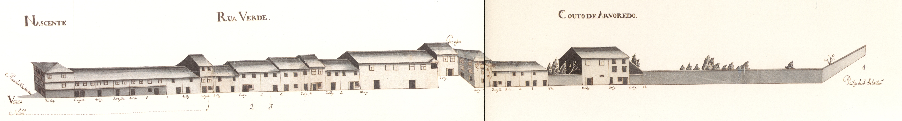

Rua Verde - nascente.Rua Verde - poente.Imagem atual da RuaImagem atual da Rua
Longa rua, com início no postigo de S. Sebastião e fim na
rua de Maximinos. O seu traçado prolongava-se, porém, até à
Porta de S. Francisco, através das
ruas dos Sapateiros e do Campo.
Decalcando, uma rua da cidade romana, era esta a mais ocidental das artérias
intra-muros da velha urbe medieval.
Ponto privilegiado nas ligações com Maximinos e a
capela de S. Sebastião, o seu traçado foi no séc. XIX (inícios?)
violentamente rompido com a continuação da rua das travessas, que, abrindo uma brecha
nas muralhas, a ligou com o campo de S. Miguel o Anjo; no fim do mesmo
século, por volta de 1880, foi alargada, sendo destruídas todas as casas,
excepto uma, de dois pisos, no seu extremo Norte, recebendo então o nome de D. Frei
Caetano Brandão.
Em 1750 apresentava-se dividida em duas: uma, a Norte da
rua das Travessas com o nome de rua Verde; outra, a Sul, chamada somente
Couto do Arvoredo.
O Couto do Arvoredo estava parcialmente construído (ainda hoje, aliás,
do lado Este conserva os quintais; e os do Oeste só nos anos 60 e 70 do nosso séc. foram
ocupados com habitações), com casas simples, de 2 pisos, de um tipo mais frequente fora
de muralhas, nos arrabaldes, sem varandas e com as janelas apenas tapadas por portas de
madeira.
A rua Verde, embora apresente um tipo de casa também muito simples, e
de contrução sem dúvida arcaica, estava já em 1750 toda construída. Mantém,
todas as casas apenas com dois pisos (excepto duas), com aberturas predominantemente
tapadas por portadas de madeira, raríssimas gelosias e varandas e algumas casas com
janela do tipo bracarense. Muito curiosos são os primeiros cinco edifícios do lado
Nascente e uma boa parte dos do Poente: são geralmente de dois vãos, 2 pisos, porta no
rés do chão e 2 janelas no andar, com um ritmo bem marcado e, sobretudo, com o sobrado
muito pronunciado, mostrando bem a fragilidade dos seus materiais construtivos.
Das 24 casas do lado Nascente e 33 do Poente, 3 e 13 são, respectivamente, prazos do
Cabido.
Lista de Casas
Casa Número: 1
Enfiteuta: Maria Catarina do Céu, religiosa do Salvador
Foro: 170 reis e 2 galinhas
Descrição: Confronta, do sul, com casa foreira à cororaria.
Casa Número: 2
Enfiteuta: Faustina Pereira
Foro: 180 reis e 1 galinha
Descrição: A enfiteuta é filha de Francisco
Rodrigues, torneiro.
Casa Número: 3
Enfiteuta: Constantino Teixeira
Foro: 175 reis e 1 galinha
Descrição: Desconhecido
Casa Número: 4
Enfiteuta: Desconhecido
Foro: Desconhecido
Descrição: Corresponde, desde o ano 1627, à casa n.º 12 da
Rua de St.º António. Encontra-se situada defronte do
postigo de S. Sebastião.
Casa Número: 5, 6 e 7
Enfiteuta: António Pereira, sapateiro
Foro: 100 reis e 1 galinha
Descrição: O enfiteuta é filho de Teresa da Costa
e de seu marido António Pereira.
Casa Número: 8
Enfiteuta: Teresa da Costa, viúva de António Pereira
Foro: 2 galinhas
Descrição: Quintal denominado do Sabugal, que foi de José de
Araújo Teixeira.
Casa Número: 9 e 10
Enfiteuta: Salvador Pinto, guarda da Sé
Foro: 220 reis e 2 galinhas
Descrição: Estão unidas, num só prazo, desde o ano de 1549. A casa n.º
9, confronta, do sul com casa foreira ao Hospital de S. Marcos.
Casa Número: 11
Enfiteuta: Desconhecido
Foro: Desconhecido
Descrição: Paga pensão à obra da Sé. São enfiteutas os herdeiros de Maria Ribeiro, que pagam 80 reis de
foro.
Casa Número: 12
Enfiteuta: José Pereira, sapateiro
Foro: 95 reis e 1 galinha
Descrição: O enfiteuta foi dotado com esta casa.
Casa Número: 13
Enfiteuta: Manuel da Costa Vasconcelos
Foro: 320 reis e 7 galinhas
Descrição: Desconhecido
Casa Número: 14
Enfiteuta: Padre Matias de Lemos
Foro: 30 reis e 2 galinhas
Descrição: Entre os anos de 1609 e 1640 pertenceu ao n.º
13.
Casa Número: 15 e 16
Enfiteuta: Manuel da Costa Vasconcelos
Foro: 265 reis e 2 galinhas
Descrição: Desconhecido
Casa Número: 17 e 18
Enfiteuta: Os herdeiros de Duarte Mendes de Oliveira
Foro: 1 galinha
Descrição: Os enfiteuras pagavam um foro muito pequeno, dado que as casas tinham sido
consideradas arruinadas no último emprazamento, etectuado no ano de
1673.
Casa Número: 19
Enfiteuta: Manuel Vieira
Foro: 225 reis e 2 galinhas
Descrição: Estas casas tinham pertencido a Isabel da
Silva e, anteriormente, a Julião
Lopes.
Casa Número: 20
Enfiteuta: Desconhecido
Foro: Desconhecido
Descrição: Corresponde ao n.º 12 da Rua de Maximinos, para onde tem a
fronteira e serventia principais.